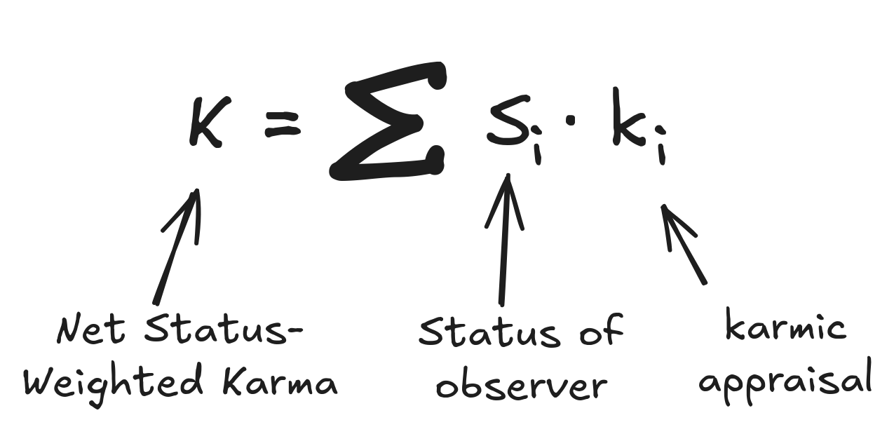
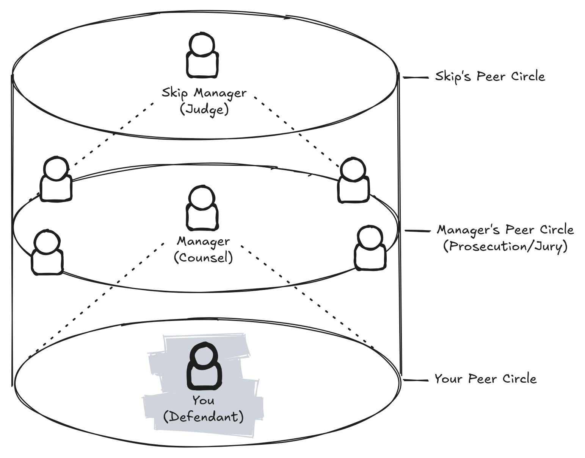
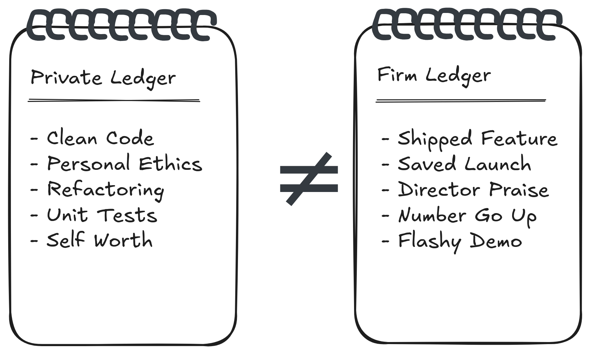
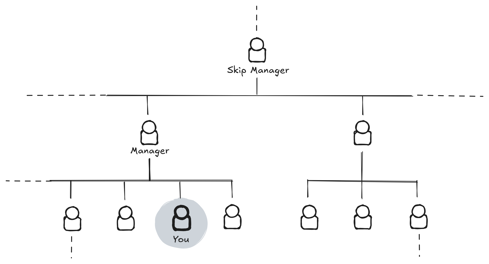
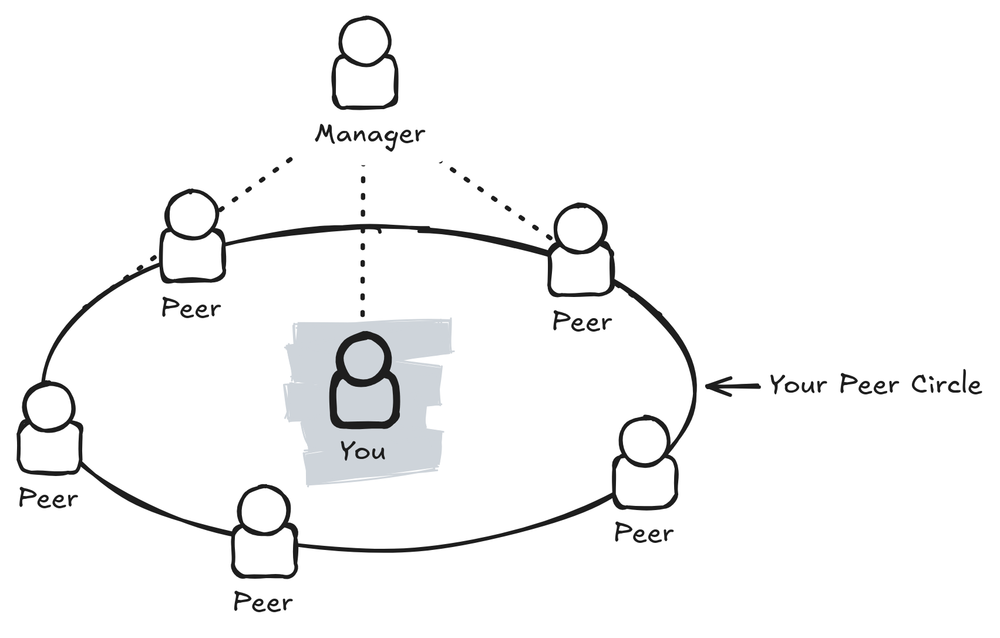
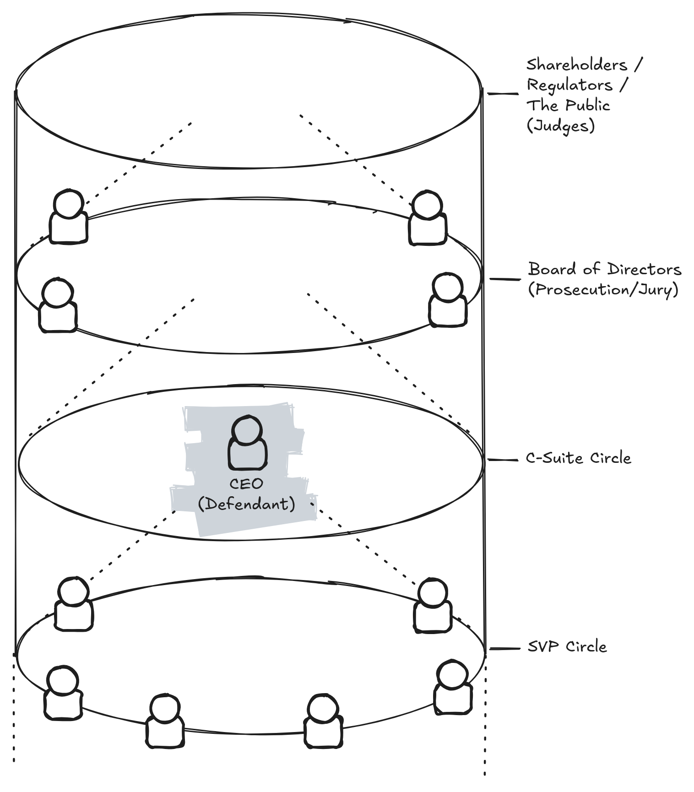
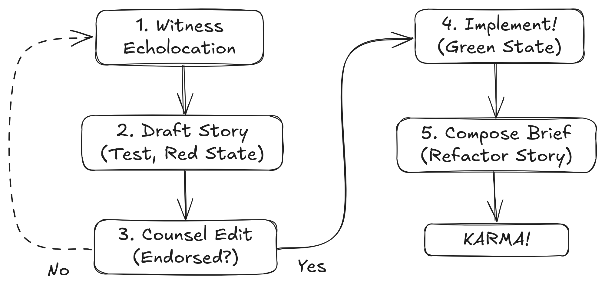
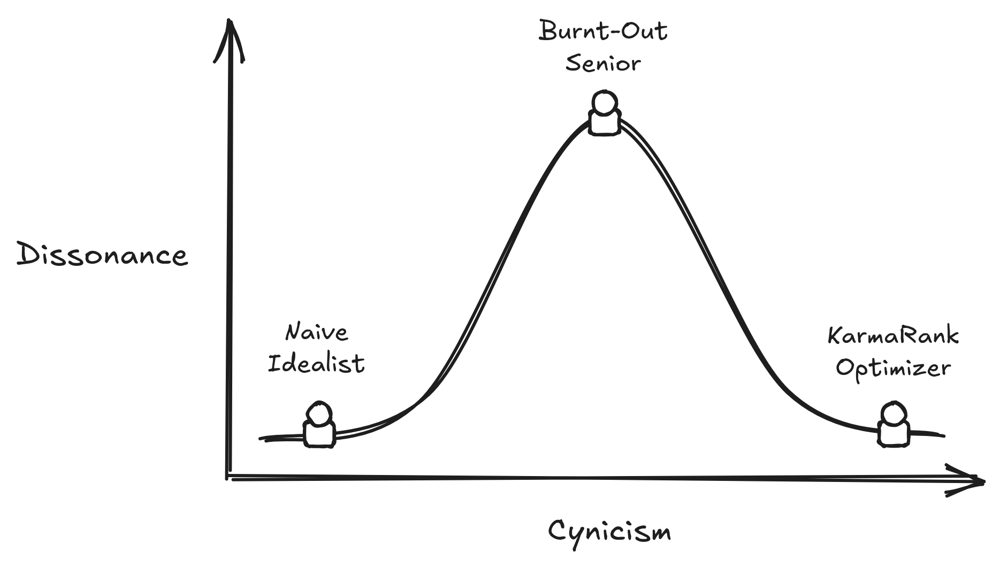

Figure: The Three Managerial Archetypes: the Technician, the
Politician, and the Peacemaker.
Figure: The Three Managerial Archetypes: the Technician, the
Politician, and the Peacemaker.Optimizing the Unspoken Corporate Objective Function
Author: jimbojw
Version: 0.2.3 (2025-12-30-f15690f)
This work is licensed under a Creative Commons Attribution-NonCommercial-ShareAlike 4.0 International License.
You are free to:
Under the following terms:
For the full legal text, see the LICENSE file in the source repository (jimbojw/karmarank).
Commercial Licensing: For commercial use inquiries, please contact the author.
Corporate performance evaluation is not a function of work quality; it is a function of Status-Weighted Stories.
This document patches the Default Engineering Worldview (which assumes meritocracy) with KarmaRank, a transitive, narrative-aggregating algorithm over the corporate social graph.
KarmaRank: Time-Decayed, Capital-Constrained, Adversarial Eigenvector-Sponsorship.
While this full KarmaRank definition describes the actual appraisal process, for the day-to-day practitioner, it suffices to optimize for Net Status-Weighted Karma:

\[K = \sum_{i} S_i \cdot k_i\]
Where:
The KarmaRank Manifesto proceeds from this, explaining how to decouple your self-worth from your rating (Law #1), optimize your output for the Firm Ledger, and maximize your karmic ROI within your local Calibration Cylinder.
 Figure: Calibration Cylinder showing You (Defendant), your Manager (Counsel), your Manager’s Peers (Prosecution/Jury) and your Skip Manager (Judge).
You are good at games. You understand games. Games have rules. Predictable, deterministic, if-this-then-that rules. If the rules are clear, you can play it.
Some games are “perfect knowledge”, meaning no hidden information. Some games let players keep secrets. Some games have random outcomes. Some games even have rules that change as you go.
I’m going to ask you to entertain a wild idea. I want you to think of the modern workplace as a game, in which you are a professional player. How do you keep score? Who are your allies and opponents? What constitutes a foul, and what are the penalties?
When you sit down to a complex board game, you have certain expectations. Some resources will be easier to acquire, some less so. A player may stiff you on a trade, or play suboptimally. That’s OK. Your own self-worth is intact. It’s just a game.
In the pages that follow, I will reveal the hidden rules and unstated social physics of the corporate performance appraisal game. If you treat it with the same detached curiosity you bring to other gaming, you’ll be fine. If you tie your self worth to being right, well, it’s going to be more difficult.
Just like in other professional sports, how you play affects your greater life. Most directly in terms of comp, but also in terms of reputation, future opportunities, social sphere, mental health, etc. And so playing ethically is the rational move. But so may be the occasional strategic light foul.
The point is that you must separate your Private Ledger, what you think of as right and true and just, from the Firm Ledger, how the company (the firm) values your contributions.
It’s not that your ethics don’t matter in some abstract sense. It’s that if you choose to commit a game-suboptimal play to satisfy your ethical frame, or vice versa, I want you to do it with eyes open. But to do that, you first have to understand the game you’re already playing, which we’ll explore thoroughly.
One final warning before we proceed: you will feel manipulative. We’ve been brought up to believe that unconscious prosocial behavior is “good” while conscious prosocial behavior is “suspicious”, “manipulative”, etc.
Unfortunately, to explain the rules and physics of the corporate appraisal game, this text must make social behavior and communication strategies explicit. You can think of our approach as going from vibes to debugger. Assistive technology for the empathetically disinclined.
Oh, and at the risk of undermining my own authority, I have never been promoted within a company. I don’t believe in it. Strategically, the firm has every incentive to withhold increases in comp and level as long as possible.
So while I’ve worked in every size org from tiny startups to Big Tech, from academia to non-profit to B2B SaaS, I’ve found it way easier to boost my pay by hopping to a competitor, than to stay and grind it out for scraps.
But if that’s you, no worries, the frameworks and techniques we’ll develop here work equally well for effort minimization or outcome maximization. Just pick a lane and play accordingly.
With that out of the way, let’s get on with our goal of mapping the firm’s real moral and status drivers. This will reduce confusion, reduce unfair self-blame, and increase the karmic ROI of genuinely prosocial behavior.
In that cold fishbowl of a conference room, my manager looked decidedly displeased. Her face was flushed, which was saying something for someone normally so amiable. The face of you’re-about-to-get-PIP’d.
I rubbed my wrist, sore from days of furious typing. I’d been getting in early and staying late, trying to wrestle my codebase into something that met all the requirements. Somehow, it still wasn’t enough.
I didn’t know it yet, but we were playing by two different scoreboards.
It all started a few weeks earlier, when I built a cool little demo.
It was a novel data visualization for one very specific dataset. On that one dataset, it looked great. You could project it in a meeting and everyone would nod and go, “Wow, that’s neat.”
My managers liked it. Then they did the obvious manager thing: “Can you make this work for arbitrary datasets?”
I said yes, because of course I did. In hindsight, that was insane. Data comes in all shapes, sizes, and pathologies. Turning a bespoke showpiece into a robust, general system is a whole other level.
I started working, and in my head, I was optimizing for my scoreboard: clean abstractions, maintainable code, a system I wouldn’t be ashamed to revisit in six months. I was chasing the feeling of having built something elegant and general.
My manager, it turned out, was optimizing for a different scoreboard entirely, one I hadn’t fully seen yet.
As the weeks ticked by and the generalized version stubbornly refused to be “done,” my manager started leaning on me with what I now recognize as HR doxa—language whose literal content is less important than its emotional payload.
She would say things like, “You need to focus on priorities,” and “How can I help?”
Being an engineer, I interpreted these word-sounds at face value. When she asked how she could help, I went away and made a groomed backlog. I put together a spreadsheet of features, estimates, and priorities, then walked into our 1:1 with an ordered list, ready to talk tradeoffs and timelines like a grown-up product owner.
She glanced at it, eyes glazed, then back to me.
Not angrily. It just didn’t register as relevant data. I’d brought her a beautifully formatted map of the territory I cared about: architecture, features, technical sequence. She lived in a different terrain entirely: people, stories, moods, status.
From her point of view, that spreadsheet was beside the point until there was at least one human somewhere in the org saying, “This helped us.” Until there was a real person, in a real team, with a real story, the internal structure of my backlog was just décor.
We were using the same words—focus, priorities, help—to play two different games. I thought we were collaborating on how to architect a nice piece of software. She was trying to succeed at being my manager in an org that cares about certain metrics and not others. That mismatch simmered for a while.
Eventually the tension boiled over.
Back in the cold fishbowl, she came to our 1:1 visibly frustrated, face flushed—the kind of affect where you can tell someone has been defending you in other rooms and is running out of narrative. An amiable woman with a slight frame, it took a lot for her to become visibly flustered.
She said:
“Look, in two weeks I and <other manager> are going to <corp HQ> for a meeting with <boss’s boss>. We need to be able to tell them who your software has helped and how.”
And suddenly, the room tilted.
Oh.
There it was: the actual objective function, finally stated in plain language.
The key questions were not, “Is the architecture future-proof?” or “Is the codebase beautiful?” The key questions were:
All of that was constrained by a simple deadline: “In time for that HQ meeting, two weeks from now.”
In that moment, my entire understanding of “value” in that context snapped into focus. My personal value system—maintainable code, generality, elegance—was a proxy, and a bad one at that. The institution’s value system, at least for this project, was:
Do I have success stories I can say out loud to high-status people, on this date?
Once I understood the metric, it was optimizable.
I stopped trying to engineer a perfectly general system and started treating the next two weeks as a bounded experiment with a clear payoff: generate at least one, preferably two, credible success stories attached to real users before the HQ meeting.
I cut an alpha build of the tool, ignoring what to me were glaring bugs in the design and went fully white glove. I reached out to potential teams in the building with data visualization problems. I plugged in their data and made hasty changes to fix their specific issues.
I parked myself at collaborators’ desks while they poked around so I could gauge their responses. When the tool broke, I hacked in quick, local fixes. When it sort of worked, I stayed just long enough to make sure they could tell a coherent “this helped us do X” story later, without me in the room.
Within those two weeks, I snagged two concrete success stories—things like, “Team A used this to finally see Y, which unblocked Z,” and “Team B used this visualization to explain W to their stakeholders.” The exact details don’t matter; what mattered was that they were legible and repeatable.
The HQ meeting was a success. My manager’s affect flipped from flushed frustration to relieved pride. From the outside, the story became, “this guy finally focused and delivered.” From the inside, the story was:
“I finally found the real scoreboard and stopped optimizing for my private one.”
I was so pleased with myself for decoding the game that I did what I always do when I think I’ve spotted a pattern: I tried to turn it into math. In my notebook, I wrote down a simple expression for what I’d just experienced:
\[K = \sum_{i} S_i \cdot k_i\]
Here, \(K\) is your Net Status-Weighted Karma in a given field: a company, a team, a subculture, a community.
The index \(i\) ranges over the people whose opinions about you actually travel—your manager, your manager’s peers, the Staff engineer everyone listens to, the PM who won’t shut up in calibration meetings.
For each such person, \(k_i\) is your karma with person \(i\): the signed “emotional value” they get from telling a story about you and your work.
The last term, \(S_i\), is their Status in this field—capital \(S\) on purpose, because it’s the most important term. It’s not just job title, but their actual ability to move decisions and narratives as it pertains to you. It’s a weight: how much their stories about you count when they reach the people who allocate promotions, opportunities, and resources.
The math is simple. Helping a lot of low-Status people a little versus helping a few high-Status people a lot can produce the same Net Karma. From a purely karmic ROI perspective, it is often substantially cheaper to create one ecstatic director than ten mildly satisfied ICs. One well-placed success story can outweigh a dozen quiet “yeah, it’s fine“s lower in the hierarchy.
That’s what I’d just done, accidentally. I hadn’t “improved the codebase” in some abstract, global sense. I had improved my Net Karma by creating a couple of high-weight \(S_i\) nodes who could now tell positive stories (\(k_i > 0\)) about me in a critical meeting.
Pleased with my little equation, I showed it to my manager.
I explained, cheerfully, something like:
“I get it now. My value to the org is basically the sum over people of how much they like telling stories about me, weighted by their status. So my job is to create high-status, positive storytellers. That’s what I optimized for with the alpha.”
Silence.
This was bad. Silence from an amiable person is a sign of deep disagreement or distress.
It wasn’t the kind of distress you get when the math is wrong. It was the kind you get when someone has said the quiet part out loud. Her expression read as: Please don’t say this in exactly these words, ever again, to anyone who signs my paycheck.
At the time, I was confused. I thought I was reassuring her: “I understand your constraints. I can optimize for what you actually need.” What she reasonably heard was closer to: “I have reverse-engineered the social game you are embedded in and I am now explicitly min-maxing your boss’s feelings about me.”
In retrospect, that was my first clear encounter with a meta-rule of corporate life:
You are allowed to play the game.
You are not supposed to write down the rules.
The organization must broadcast a story about “merit” and “impact” that is neutral, objective, and morally acceptable. Writing it as a status-weighted sum of feelings about you is not morally acceptable, even if it’s descriptively accurate.
In hindsight, my manager was doing something I didn’t have language for yet.
She was a natural affective-labor manager. She spoke fluent HR doxa. She could feel, without effort, which stories would land in a VP’s office and which wouldn’t. She had an internal gyroscope that told her what kinds of updates, phrased in what kinds of ways, would count as “real impact” versus “nice-to-have tinkering.”
A sociologist would say she had the right habitus for that field: the internalized feel for how things are done, what counts as real, what counts as “impactful” versus merely interesting. The norms of that space lived in her body. Maybe it was natural. Maybe honed from years of practice. But either way, she had it. (See Bourdieu)
I had the opposite profile. I could build the tool and explain the design, but I had almost no feel for that emotional-political terrain. She intuitively tracked who mattered, what they cared about, and which narratives they were hungry for. I had to derive all of that on paper, after getting smacked by reality.
Some people are born into—or trained into—the right habitus for a given field. They just “get” what counts, who matters, what to say in which room. The rest of us end up reverse-engineering it after enough humiliations (if ever).
This document exists to help balance that asymmetry: a way for people like me—who don’t come pre-installed with the right habitus—to see the game board clearly enough that we don’t all have to learn it the hard way.
The leap from Net Karma to KarmaRank comes from layering in a few more observations:
So a complete KarmaRank definition ends up looking like this:
KarmaRank: Time-Decayed, Capital-Constrained, Adversarial Eigenvector-Sponsorship.
This full model explains the complex topology of the Calibration Cylinder (covered later). But for daily operation, the linear approximation \(K = \sum_{i} S_i \cdot k_i\) is sufficient.
Everyone has the same job: to secure timely, Status-Weighted Stories in a dynamic, heterogenous, adversarial field, and call this narrative aggregation “impact.”
Some people intuit this. Good for them. The rest of us have to write it down.
KarmaRank is for the second group. You don’t have to struggle through a decade of half-failed projects and flushed 1:1s to see KarmaRank. I did that part for you.
Severity: Critical
Status: Active Exploitation Detected
This manuscript is going to systematically dismantle a number of your unexamined, cherished beliefs. I have too much respect for your time to withhold that knowledge, and so here it is, up front.
The reason you are frustrated—the reason you feel gaslit by HR, confused by promotions, and exhausted by “politics”—is not that you are bad at your job, or that the system is “rigged”. It is because you have been systematically indoctrinated (optimized) into a vulnerable mental model.
What follows is a list of the Five Critical Vulnerabilities in the Default Engineering Worldview (DEW).
The Vulnerability: You believe that hard work is intrinsically virtuous and that “grinding” is the path to success.
The Reality: In engineering, we value efficiency, not brute force. Yet in your career, you are manually brute-forcing your way through tasks, hoping someone notices your sweat.
The firm does not value your suffering. It values Status-Weighted Stories. If you work 60 hours to do what a politically savvy peer achieves in 6 hours of “visibility work,” you aren’t a hero. You are inefficient. The system interprets your silence and suffering as low-value labor.
The Vulnerability: You believe that the work artifact (the code, the analysis, the doc) is the “Real Object”—what philosophers call noumenal, the thing in itself—and your manager’s opinion is just a noisy approximation of that truth.
The Reality: You have it backward. In the corporate epistemology, perception IS the noumenon.
There is no capital-T Truth behind the rating; the rating is the object. Your code, docs, and analysis are merely shadows on the cave wall.
Do not confuse the input (your labor) with the output (the recognition). The rating is the job.
The Vulnerability: You assume your manager and leadership are driven by “Logic” and “Accuracy.” When they make an illogical decision, you assume they are underinformed, stupid, or technically illiterate.
The Reality: They are not stupid. They are optimizing for a different set of psychological drivers.
While you are optimizing for Truth and Efficiency (your own drivers of Achievement), they may often optimizing for their own Achievement, or for Power (influence, control) or Affiliation (consensus, relationships). You are sending JSON to a SOAP endpoint. The communication is failing not because the data is wrong, but because the format is rejected.
The Vulnerability: You believe “Merit” is universal. Our measurements may be noisy, but an ideal exists.
The Reality: “Merit” is a dynamically typed variable. Its definition is assigned at runtime by whoever holds power.
A criterion may be objective (e.g., “lines of code,” “revenue generated”), but the selection and weighting of criteria are matters of taste and political convenience. There is no Golden Age to return to. The scorecard is ineradicably biased because the people keeping score are also playing the game.
The Vulnerability: You keep waiting for HR or Leadership to publish clear, consistent rules for promotion and compensation. You think the ambiguity is a mistake or a sign of incompetence.
The Reality: The ambiguity is a primary security feature.
If the firm gave you a clear, static set of rules (e.g., “Do X, Y, and Z to get promoted”), you, and everyone else, would ruthlessly optimize for those variables and destroy the company (Goodhart’s Law). Leadership must deploy “Strategic Ambiguity” to retain their veto power. They will never give you the manual you are looking for. You have to reverse-engineer it.
If you can accept these five premises—or at least entertain them as working hypotheses—we can proceed. The rest of this text depends on patching these specific vulnerabilities.
We are going to take your career off the “Default” setting and switch it to “Manual.” Whether you use these tools to claw your way to the C-suite or just to minimize your effort while maximizing your karmic ROI, the mechanics are the same.
Let’s open the debugger.
You are running two ledgers in one head.
In your Private Ledger you keep score in terms of craft and ethics. “Did I build the right thing?” “Is it correct, elegant, fair?” It’s your local religion. You don’t need anyone’s permission to maintain it. Taste is pre-rational.
On the other ledger, the Firm Ledger, the firm keeps score in terms of stories that travel. “Who says you helped them?” “How easy is it to repeat that story up the chain?” Its unit of account is the Status-Weighted Story about you, passed between people who can move budget, headcount, and promotion packets.
It is a common yet critical mistake to assume these ledgers are the same system with some measurement noise, like a single, eventually consistent database. They are not. They are different databases with different schemas, occasionally synced only by accident. Like a hash collision.
The friction you experience by the misalignment of these two databases is Conative Dissonance.
When you stay late refactoring code nobody will ever hear about, that’s a Private Ledger credit. When a director tells a VP “she saved our launch,” that’s a Firm Ledger credit. These events often do not coincide in time, or at all.
 Figure: Private Ledger (left) is not equal to the Firm Ledger (right).
From the firm’s point of view, your Private Ledger is a personal hobby (on company time!). They don’t query it. They query the Firm Ledger, then serialize the result into ratings, levels, and comp.
Whether you treat the Firm Ledger as morally authoritative is your business. This text only cares that you stop expecting Private Ledger entries to auto-replicate into a system that never subscribed to that table.
The firm does not pay you by the hour. And it certainly does not pay you “for the work.”
The firm pays you an annualized total comp package, partitioned into biweekly installments, for a portfolio of Status-Weighted Stories about you that your evaluators are willing to endorse.
From the firm’s perspective, any effort that does not improve that portfolio is tantamount to willful embezzlement. You are quietly cashing their checks while investing your energy into a private ledger they neither see nor value.
Whether you internalize this moral framing as your own is your business. I’m not saying you should treat your craft or your users as secondary.
I’m saying: this is how the firm’s operating system sees you, as demonstrably encoded in their performance appraisal rituals. When you understand that, a lot of confusing decisions suddenly make sense.
“Impact” is a fluff word.
People say “impact” the way astrologers say “energy”: a vague scalar that is always supposed to be “higher” than last year. It sounds serious. It explains nothing.
Under KarmaRank, “impact” has a very specific implementation:
Impact = Who Cares?
Literally: who \((S_i)\) cares \((k_i)\).
Written as math, your capital-I Impact to the firm is just your Net Status-Weighted Karma:
\[K = \sum_i S_i \cdot k_i\]
If nobody with Status cares, the system has nowhere to store your so-called “impact”. It lives only on your Private Ledger as a pleasant feeling about yourself.
This gives you a simple test:
If you cannot answer “who cares?” (with names, not archetypes), you are doing speculative impact. To you, it may be good. It may be virtuous. It may even be useful in some cosmic hard-to-measure sense. But as far as the Firm Ledger is concerned, it does not exist yet.
Law #3 is the operational version of Law #2.
“The rating is the job” tells you what gets serialized.
“Who Cares?” tells you how to decide where to spend your next hour.
You are allowed to play the game.
You are not supposed to describe the game.
When I showed my manager the Net Status-Weighted Karma formula, she wasn’t upset because the math was wrong. She was upset to see years of political savvy and emotional labor collapsed into a dehumanizing (from her perspective) one-liner.
The modern firm is a social network made of people who, like you, have their own pre-rational tastes, preferences and sacred cows. But unlike you, most people are unwilling to decouple their Private Ledger from the Firm’s—to see things dispassionately.
The modern firm needs to project a public religion of “merit,” “impact,” and “values.” People have to be able to say, with a straight face, that performance ratings emerge from a neutral evaluation of objective contributions. If you insist on talking about Status weights and the emotional payoff of stories, you are not “insightful.” You are rude.
From the inside, the rule looks like this:
You may act on the true objective function.
You may not name the true objective function.
You are expected to transubstantiate your moves back into the house liturgy: “driving business outcomes,” “raising the quality bar,” “delighting users,” “living the leadership principles.” The closer your internal model gets to “I am maximizing high-Status storytellers who enjoy endorsing me,” the more aggressively you must wrap it in acceptable language.
This is not a conspiracy. It is social hygiene. If the firm acknowledged, openly, that your rating is a Status-weighted sum of other people’s feelings about you, half the building would quit and the rest would start playing even more nakedly political games. Strategic ambiguity keeps the story stable.
So you keep two layers:
Violating Law #3 does not change how the system works. It only changes how the system categorizes you. Instead of “high-potential,” you become “cynical,” “political,” or “not a culture fit.”
This text is written in the forbidden dialect on purpose. Treat it like you would any other internal tool: useful in the debugger, potentially disastrous in the release build.
According to Law #2, the rating is the job. And by our earlier observations, the unit of account is the Status-Weighted Story. That’s all well and good, but whose karma are we harvesting here?
In this chapter you’ll learn the local topology of the network graph as it applies to performance appraisal: a structure I call the Calibration Cylinder.
If I asked you to draw a map of your workplace, you would likely draw a Tree: the Org Chart. You are a leaf node, connected to a branch (Manager), connected to a trunk (Director/VP), and so on.
 Figure: Boring, uninformative, corporate Org Chart.
Delete that mental image. It is a static representation of reporting lines, useful primarily for knowing whose name is on your vacation approval. It tells you little about the physics of how your value is actually calculated.
The Org Chart implies a chain of command. The reality, as it applies to you, is a pressure vessel.
Starting at the bottom, you are at the center of a circle. The perimeter of that circle consists of your Peers reporting to your shared manager.
 Figure: Circle of You and your Peers under your shared Manager.
Your circle of Peers forms the base of the cylinder. Above you, in the middle layer, your Manager is at the center of their own circle, surrounded by their Peer Managers. Your Skip Manager (manager’s manager, e.g. Director) sits in the top layer, the center of their own third circle of peers, looking down into the cylinder.
Figure: Calibration Cylinder showing You (Defendant), your Manager (Counsel), your Manager’s Peers (Prosecution/Jury) and your Skip Manager (Judge).
This cylindrical portion of the corporate social graph contains the people who have direct influence on your rating. People exterior to the cylinder may have indirect influence, subject to the discretion of the in-cylinder participants. For example, if you, yourself, happen to be a manager, then the feedback of your circle of reports below you may influence your manager above.
Twice a year (or however often your company performs reviews), the lid is put on this cylinder, and the heat is turned up. This is the Calibration Meeting. And it works a whole lot like a courtroom.
You probably know this critical fact about your performance review: You are not in the room.
Your evaluation is not a standardized test where you fill in the bubbles and a machine grades you. It is a litigation. It is a trial by jury, held in absentia.
Once you understand that the Calibration Meeting is a courtroom, the roles become clear.
You are on trial. Your compensation, your title, and your future leverage are on the docket. But because you are not allowed in the room, you cannot speak for yourself.
This is the most important reframe in your career. Your manager is not your “boss” during calibration; they are your court-appointed counsel.
Most engineers treat 1:1s as “status updates” or “confessionals.” This is a strategic error. A 1:1 is legal discovery.
If you walk into a 1:1 and say, “I’m struggling with this API,” you are handing your attorney bad facts.
If you walk in and say, “I just shipped X, which solved Y for Team Z,” you are handing them Exhibits A, B, and C.
Your attorney (Manager) is likely tired, overworked, and managing 6 other cases. If you do not hand them the prepared brief—the status-weighted stories—they will not have the energy to invent a defense for you. They will plea bargain you down to “Meets Expectations” to save their political capital for a client who gave them better evidence.
Here is where the “Team Player” myth dies.
The other managers in the room are not your friends. They are your Manager’s Peers (\(S_i\) nodes in the Cylinder).
They are acting as both Jury and Prosecution.
Why prosecution? Because the budget is finite. The “Exceeds Expectations” rating is a scarce resource (often capped at 10-20% of the pool).
For Manager A to get a promotion for their star engineer, they effectively need to argue that you do not deserve one. It is a zero-sum game of horse-trading.
The Judge sits at the head of the table. They often don’t know your name, or if they do, they know it as a variable in a spreadsheet.
They care about three things:
In the KarmaRank chapter, we discussed Status-Weighted Stories (\(K = \sum S_i \cdot k_i\)). Here is why the variable \(S_i\) (Status) is the dominant term.
When your Manager (Attorney) presents your case, they will point to your work. “My report refactored the legacy billing system.”
If the room is silent, that claim dies. It is just a claim.
But if a Peer Manager (a Juror) speaks up and says: “Yes, and that refactor saved my team 20 hours a week,” the dynamic shifts instantly.
Documents do not testify. A Jira ticket cannot take the stand. A pull request cannot look the jury in the eye.
People testify.
When you help a high-Status person in the organization, you are not just “being helpful.” You are securing a witness. You are ensuring that arguments are made, you have friends in the jury box.
This is why “visibility” matters. Visibility is simply the availability of credible witnesses during your trial.
If you treat your job as “writing code,” you are leaving your fate to the rhetorical skills of your tired Manager.
If you treat your job as “generating Status-Weighted Stories,” you are effectively engaging in lawful jury tampering.
Your goal is to ensure that by the time the Calibration Meeting starts, the verdict is already technically decided because three of the five high-\(S_i\) people in the room have already “bought” your story.
Crucially, your manager is playing the same game. They’re at the bottom-center of their Calibration Cylinder. Their own rating will be determined by the next layer up. Their own peers’ feedback funnels to their manager (your skip) whose peers are your manager’s jury.
Why does this matter to you? Your manager is cultivating their own Status-Weighted Stories (exhibits) for their own upcoming defense. How they “manage” you is crucial evidence made in direct view of their attorney and peers.
And so, your manager’s eagerness to defend your case will naturally be influenced by the degree to which that defense contributes to their own portfolio. Thus, it’s prudent to proactively consider your manager’s Calibration Cylinder in crafting your own stories.
You might think, “This sounds exhausting. I’ll just become a Manager/Director/CEO and stop playing games.”
I have bad news. The topology is fractal.
When the CEO announces a layoff, or a pivot to AI, or a stock buyback, do not mistake it for “strategy” in the pure sense. It is a Status-Weighted Story presented to the Board of Directors (The Jury) and the Market (The Judge) to prove that the CEO is still a “High Performer.”

Figure: CEO’s Calibration Cylinder showing SVP, Executive, Board and
Market circles.
The cylinder goes up indefinitely. The only thing that changes is the blast radius of the decisions. Everyone has the same job: figure out who matters, then ship them stories they’ll endorse.
In the preceding chapter, you saw the Calibration Cylinder—the relevant local topology of your corporate social graph. We discussed how calibration operates like a courtroom, a trial in absentia, with your manager performing the role of your public defender (Counsel).
The other managers in the room are the Prosecution/Jury. The Skip Level is the Judge. The budget for promotions and raises is the settlement fund.
To secure your best defense, you’ll want to Know Your Counsel (KYC). This will allow you to select projects and frame Status-Weighted Stories in the native schema of your particular cylinder.
In the engineering world, managers generally fall into one of three archetypes: the Technician, the Politician, and the Peacemaker.
Figure: The Three Managerial Archetypes: the Technician, the
Politician, and the Peacemaker.
Every person is different, but these abstract base classes extend from their primary motivations ((McClelland)).
The Psychology: This manager is driven by Competence. They view the team as a machine and themselves as the Chief Architect. They care about efficiency, mastery, and “doing it right.” They are allergic to fluff, marketing speak, and emotional appeals. They are often former Senior Engineers who were Peter-Principled into management.
The Litmus Test:
The Interaction Protocol:
How they argue in court: “My client’s output is 20% higher than the L5 baseline. The data demands a promotion. If we don’t promote them, our leveling rubric is invalid.”
The Psychology: This manager is driven by Influence. Do not confuse them with a “Climber” who just wants a raise. They view the team as an operational sphere and a stepping stone to the next level of organizational control. They care about “optics,” “alignment,” and “visibility.” They want to be seen as a Kingmaker who grooms future leaders.
The Litmus Test:
The Interaction Protocol:
How they argue in court: “My client isn’t just coding; they are driving the VP’s Q3 strategy. Promoting them solidifies our department’s leadership in this domain.”
The Psychology: This manager is driven by Connection. They view the team as a family. They care about morale, retention, and everyone getting along. Warning: This is the most dangerous attorney to have. In a calibration fight, they are prone to folding early to avoid conflict with their peers. They value their relationship with the other managers more than they value winning your case.
The Litmus Test:
The Interaction Protocol:
How they argue in court: “My client is the glue holding the team together. If we don’t recognize them, we risk morale issues and attrition.”
I should warn you not to be too hasty in putting your manager into one specific bucket. For example, many managers will ask you “how are you feeling?” as an opener. This doesn’t mean they’re Peacemakers necessarily.
As we discussed, the Default Engineering Worldview has left your peers with copious, free-floating Conative Dissonance. Consequently, managers often have to become untrained therapists.
Likewise, even if your manager is a natural Technician or Peacemaker, to be effective they’ll have learned (or been trained) to emulate Politician-speak. You’ll observe them using words like “impact” and “visibility” even if their heart is elsewhere.
So don’t fixate on the first words that come out of their mouth (“How are you?”) or when they’re delivering manager-role canned lines (“Let’s discuss milestones for Q3.”). To reverse engineer their archetype, you may have to collect subtle cues over time.
Or pull off a conversational bank-shot. You might start by asking them a mentorship question, like a book recommendation. Their answer will be a mix of their own taste and what they think would benefit you specifically.
Possible examples:
When you follow up with “how was this book transformative for you?”, you open the floor for them to reveal who the were and who they wanted to become. This should strongly indicate their dominant managerial archetype.
Now that you have identified who you are trying to impress (the court) and who will be delivering that defense (your manager), it’s time to learn what to do. This brings us to Karma-Driven Development.
In software engineering, the most disciplined teams practice Test-Driven Development (TDD). The rule is simple: Red, Green, Refactor.
Despite this, most careers run on Waterfall. You do months of work, ship it, and then hope that the calibration court validates your work. This is madness. You are building features without a spec.
To fix this, adopt Karma-Driven Development (KDD). In this framework, you never write a line of code until you have written the performance review bullet point that rewards it.
 Figure: Karma Driven Development (KDD) Flowchart.
Remember Law #2: the rating is the job.
Before you can write a test, you need requirements.
Right now, your mental backlog is likely full of “Technical Debt” and “Cool Ideas.” You cannot sort this list by Technical Merit (Private Ledger). You must sort it by Market Demand (Firm Ledger).
Scan your local area of the corporate social network, including (but not limited to) your Calibration Cylinder . Find a high-status Witness (\(S_i\)) who needs a problem solved. But do not just ask them what to do.
If you ask “What should I work on?”, you are an execution-bot. You are a commodity. Instead, you goal is to trigger the IKEA Effect.
The IKEA Effect: A cognitive bias in which consumers place a disproportionately high value on products they partially created.
You want your Witness to feel like they had a hand in steering your project. If they design the box, they will love the box. To do this, you must use Political Echolocation—pinging the network with a calibrated question to see what signal returns.
Schedule a 15-minute sync with a High-Status Node—a Staff Engineer, a Principal PM, or your Skip-Level. Use the specific “Hook” that matches their Archetype.
Target: The Technician Witness
Target: The Politician Witness
Target: The Peacemaker Witness
Now that you have validated the demand and secured a Witness, you enter the Red State.
Open a blank document. Write the bullet point exactly as you want it to appear in your promotion packet six months from now.
The Test: “Reduced AWS infrastructure spend by 20% ($150k/annually) by optimizing hot-path caching patterns, validated by Staff Engineer [Witness Name].”
Currently, this test fails. The cost of telling it is high because the story is false. But you now have a target.
Do not start coding yet.
You must run this test against your Counsel (Your Manager). In the previous worldview, you would ask for approval. In KDD, you ask for Co-Authorship.
You want your manager to edit the bullet point. If they change the wording, they become psychologically committed to defending it in court. They are no longer defending your work; they are defending their words.
Bring the draft to your 1:1 and apply the Archetypal Cross-Compiler:
Now—and only now—do you do the work. And crucially, you do only the work required to pass the test.
Your goal is to turn the test from Red to Green with the minimum possible calorie expenditure.
The “Puritan” inside you will want to rewrite the entire system to be “elegant.”
Suppress the Puritan.
The Firm did not buy “Elegance.” They bought “20% Cost Reduction.” Any effort spent beyond the Green State is Gold Plating—uncompensated labor that introduces risk without adding status.
Caveat: If your Manager is a Technician, “Clean Code” is part of the spec.
But here again, only provide the minimum viable aesthetics to satisfy your specific audience. Your own Private Ledger taste is irrelevant.
The work is done. The test passes. Now you engage in “Refactoring”—but not of the code. You refactor the Story.
You have the raw materials:
The naive engineer builds the software, then tries to write a marketing brochure for it. The KDD practitioner writes the brochure, pre-sells it to the market via the IKEA Effect, and then manufactures the product to spec.
Code is a liability. The Status-Weighted Story is the asset. Never generate the liability without securing the asset first.
Next up: packaging the Story for deployment. It’s time to manufacture some evidence (the Brief).
In the previous chapter, you learned Karma Driven Development (KDD), a strategy for choosing Status-Weighted Stories first and working backwards to make them true. Now it’s time to learn how to optimize that evidence for your manager to bring to calibration court.
Your manager is tired. They have six other cases to litigate. They do not remember that cool bug fix you did in March.
In the lead up to your performance review, if you ask your manager to “look at my commits,” you are asking your lawyer to investigate the crime scene ten minutes before the trial starts. You will lose.
Your job is to hand them a fully formed Legal Brief. This is a document that requires zero cognitive load to copy-paste into the HR portal.
But how do you write a brief that survives the adversarial environment of the Calibration Cylinder? For that you have to understand the psychology of the jury.
Your evaluators (Directors, VPs, Senior Peers) are human beings, but they are a specific type. They are Numerophiles.
They are impressed by quantification. In the absence of trust, they use numbers as a proxy for truth. A paragraph of prose feels like an “opinion.” A scatter plot feels like “science.”
It does not matter that the “45 hours” is a napkin-math estimate. It is a Number. It has significant digits. It triggers the “Truth” receptor in the evaluator’s brain. Defensible estimates are in bounds.
Before you pick your number, you must pick your narrative. This goes back to CVE-DEW-03 (The Motivation Mismatch). You must frame your achievement in a way that strokes the specific motivations of your evaluators.
Different tribes worship different gods:
You must estimate the moral composition of your org in general and the Calibration Court in particular, then tailor your evidence accordingly.
Let’s say you updated a settings page.
If the Jury is Sales-Driven:
If the Jury is Engineering-Driven:
If the Jury is Modern SV (Care/Harm):
Same work. Different story. Different numbers.
If you pitch the “CSS deletion” story to a room full of “User Empathy” managers, you get a pat on the head. If you show them the Likert scale data, you get a promotion.
Humans are visual creatures. A wall of text is a barrier; an image is a bypass tunnel straight to the brain.
Whenever possible, do not just state the number. Show the delta.
If you are claiming that your new UI is better, do not just write “1.53 points higher.” Deploy a diverging stacked bar chart.
 Figure: Example diverging stacked bar charts for showing quantified
sentiment change.
Figure: Example diverging stacked bar charts for showing quantified
sentiment change.
When a tired Director scans your packet at 4:00 PM on a Friday, they will not read your bullet points. They will look at the pretty picture. The picture says “Up and to the Right.” The picture says “Competence.”
If you don’t know what data visualizations to make, ask your AI of choice something like “what’s the idiomatic/persuasive way to visualize <your kind of data>?”.
Your final deliverable to your manager—the document you hand them a few weeks before calibration—should look like this:
Headline: [The Moral Frame] e.g., “Democratizing Data Access for Non-Technical Users”
Your company or team probably keeps a specific internal doc or side template. Use it. Your goal is low cognitive load, not art.
No. You should not outright lie (make shit up). And you shouldn’t have to! This would demonstrate a severe lack of creativity.
Even if your in-the-moment evaluators don’t check the tape at evaluation time, they may later! Or, circumstances change. Reorgs happen. The new boss may have an extreme reality-correspondence preference.
Your strategy should not be to falsify data. Your requirement is to format reality. You already picked the right story during Karma Driven Development. Now you’re just packaging for release.
The firm demands Status-Weighted Stories and prefers them to have numbers and pictures. If you refuse to provide Briefs, you are not being noble. You are sabotaging your defense.
Give the court the evidence so that they can give you the money.
We have spent this entire text discussing how to optimize your position inside the firm. We covered how to debug the culture, how to identify what matters, and how to manufacture the evidence required to get rewarded.
But sometimes, the math just doesn’t work.
Maybe your manager is fundamentally disempowered. Maybe your division is a cost center facing budget cuts. Maybe the firm itself is sinking.
In these cases, applying Karma-Driven Development is like trying to grow crops in salted earth. You are doing the farming right, but the environment is too hostile to yield a harvest.
When you find yourself in this position, engineers often try to “work harder” to fix it. They try to debug the department. They try to save the team.
This is a mistake. You cannot fix a system you do not own.
When the environment can no longer support your growth, the rational move isn’t to complain, or to grind harder. It is to take your talents to a market that values them.
There is a structural reality in the modern corporation that you must accept: Budgets are optimized for Acquisition, not Retention.
It’s nothing personal. It’s just how the money is pot-bound.
In a high-demand industry, these two numbers drift apart rapidly. If you stay at a company for more than two years, you are likely suffering from a Loyalty Discount.
You are effectively subsidizing the firm to hire your replacement, who will sit at the desk next to you, do less work, and make 20% more than you. The firm counts on your inertia. They are betting that the pain of interviewing is greater than the pain of being underpaid.
It pays to prove them wrong.
How do you know when it’s time to go? You don’t rely on “bad vibes” or a single bad day. You treat it like data.
Every six to twelve months, you should perform a Market Check.
This doesn’t mean you are quitting. It means you are performing Price Discovery. You cannot know the value of your employment by looking at your current pay stub. You can only know it by seeing what a stranger is willing to offer.
Knowing the truth is just data. Ignoring the market is negligence.
The strongest argument for leaving isn’t always money. It’s Reputation Hygiene.
Inside your current company, you carry the weight of negative valence Status-Weighted Stories ascribed to you (deserved or not). The awkward interaction with that Product Manager? It’s still in the air. Your “file” contains legacy baggage.
When you interview at a new company, you get a Clean Slate.
The hiring manager doesn’t know about all your past stories. They don’t know your current boss thinks you’re “just a mid-level engineer.” They only know what you tell them. You get to define your identity from scratch.
This is where the work we’ve done in previous chapters pays its final dividend.
You might worry that leaving means “wasting” the effort you put into building your internal case.
The opposite is true.
The Status-Weighted Stories you manufactured for your internal promo packet?
The Briefs you wrote with the “Villain, Hero, Witness” structure?
That is your interview script.
The exact same artifacts you built to survive the internal calibration are the ones you use to ace the external interview.
“I reduced cloud spend by 20%” works everywhere. The story is never wasted; it just changes audiences.
We are taught to view job-hopping as a sign of instability or lack of loyalty.
I encourage you to view it as Arbitrage.
If your Private Ledger says “I am a Senior Engineer,” but your Firm Ledger says “You are a Level 3,” there is a mispricing in the market. Arbitrage is simply the act of moving an asset from a market where it is undervalued to a market where it is valued correctly.
You are not “giving up.” You are executing a trade.
The Corporate OS we’ve mapped in this text is a game. The Cylinder is the board. Karma is the score.
But the board is not the world.
You have agency. You are the CEO of your own career. If the game becomes unwinnable, or if the rewards stop matching the effort, do not become toxic. Do not become cynical.
Just pack up your stories, take your clean slate, and go play somewhere else.
This journey began with a cold dismantling of the Default Engineering Worldview. It ends with a challenge.
Throughout this text, as we mapped the Calibration Cylinder and the Firm Ledger, you likely felt a sense of vindication. Finally, a vocabulary for why the system feels broken. Finally, proof that you aren’t crazy.
But you might also feel a lingering resentment. You might be thinking: “I hate that I have to do this. I hate that I have to manipulate the jury just to get paid for my work.”
This resentment is a warning light. It means you are halfway there.
The problem isn’t that you are too cynical for your company. The problem is that you are not cynical enough.
The engineer who complains that “politics is unfair” is actually a closeted optimist.
You are angry because, deep down, you still believe the system should be fair. You believe the Firm Ledger should match the Private Ledger. You are like a physicist screaming at the second law of thermodynamics because it creates waste heat.
If we map Cynicism against Dissonance, we see a distinct curve:
 Figure: Chart showing the Cynicism-Dissonance Curve. X-Axis: Cynicism. Y-Axis: Dissonance.
On the X-Axis, plot Cynicism (System Awareness). On the Y-Axis: Dissonance (Distress). The curve starts low (Naive Idealist), rises high (Burnt-Out Senior), and dips low again (KarmaRank Optimizer). Let’s look at each archetype.
The tragedy of the Burnt-Out Senior is that they stopped analyzing at the point of injustice. They realized the Meritocracy was a lie but didn’t finish the analysis.
The Optimizer keeps analyzing until they find the mechanism. They don’t waste calories judging the “Judge” for not reading the code. They accept the Calibration Court as a boundary object and adapt.
A truly cynical engineer does not yell at gravity; they build an airplane.
You have likely viewed “Office Politics” as an impenetrable fog of irrationality, inhabited by Extroverts who succeed on charisma. You feel you lack the habitus to compete.
But here is the great news: The social network is just another system.
It is a complex, probabilistic state machine with inputs, outputs, and weighting functions. It is messy, and often under-specified, but it can become legible. And you have a massive, asymmetric advantage over the natural Politicians you detest.
A Systematizer can logic their way to Empathy. But an Empath cannot feel their way to Systematization.
Think of it this way: You are like a CPU. You are optimized for serial, logical, heavy-lift computation. To you, “politics” (rendering the social graphics) feels slow and inefficient. But you can do it. You can run the simulation.
The natural Politicians? They are like GPUs. They render the social graphics instantly, but that advantage is domain-specific. Their intuition for people will not help them debug a stack trace.
Once you accept that social dynamics are learnable skills rather than character flaws, you become full-stack. You become an entity that can build the value and sell the value. There is no ceiling for that archetype.
For years, the firm has fed you some combination of “Family” rhetoric and “data-driven” mantras. They told you they loved your craft. They gave you stickers and pizza and public praise.
They were not gaslighting you to be malicious. They were soothing you to keep you functional.
The business saw that you, the Engineer, responded to words of affirmation. They saw that you were willing to trade high-value Intellectual Property for a kudos from a manager or skip. Rationally, the Firm paid you in the cheapest currency you were willing to accept: Validation.
The Firm is not your enemy. The Firm is an amoral mirror. It issues what you demand in proportion to what value you produce. If you demand praise, they will pay you in praise. If you demand Status, they will pay you in Status.
KarmaRank is, ultimately, an instrument of Price Discovery.
When you stop doing work that isn’t on the Firm Ledger, you are not “quiet quitting.” You are correcting a market distortion.
You are forcing the Firm to realize that “Quality,” “Maintenance,” and “Mentorship” are not free, naturally occurring resources. They are products. If the Firm wants them, they must pay for them with currency that matters: Promotions and Budget.
There is a price to pay for this clarity.
You must transcend the Dissonance. You must detach your personal moral compass from your economic engine. You must accept that you can be “Right” (technically) and “Broke” (politically) at the same time.
You must accept that the Rating is the Job.
Once you swallow that pill, you have a choice. You can play the game to win high status, or you can play the game to minimize your effort.
You can work 60 hours for a “Strong Exceeds” or you can work 20 hours for a “Meets.” Both are rational economic moves. What is irrational is working 60 hours for a “Meets” because you refused to write a Brief.
It feels colder out here, outside the warm illusion of the “Work Family.”
But the air is cleaner. And the visibility is unlimited.
You are good at what you do.
People like us build and maintain the modern world.
Stop doing it for free.
You prefer clear rules and actionable guidance. I’ve endeavored to give them to you.
You learned tactics like Political Echolocation in service of Karma-Driven Development (KDD). We discussed Knowing Your Counsel (KYC) to secure the best defense in calibration court. I showed you how to construct a Brief with a Visual Kill Shot to arm your haggard public defender (your Manager).
It’s undoubtedly tempting to take your new clarity and agency and ride off into the code cowboy sunset. And if you want to, I don’t blame you. Cheers and godspeed.
But if you’ve read this far, we may walk the stack another level or two. The system is neither as irrational nor stable as it may now appear.
In our final exploratory act, let’s zoom out to map the pressures that lead to the system as we now observe it, and infer what that means for our fellow KarmaRank practitioners.
The Default Engineering Worldview treats calibration as a moral failure: “politics,” “bias,” “vibes.” The triumph of charisma over truth. But to take in the full picture, let’s consider the firm as an optimizer under constraints. In this light, calibration starts to look less like corruption and more like a convergent solution to an ugly valuation problem.
The firm isn’t trying to discover capital-T Truth. It’s trying to allocate scarce rewards in a way that is stable against gaming, cheap enough to run, and socially legible.
Here is the constraint set that makes “just measure merit” a fantasy:
Given those constraints, a fully objective, static, rule-based promotion logic is not merely unavailable, it is actively dangerous. If you did publish a clear scoring rubric, people would game it, the rubric would stop measuring what you wanted, and the firm would drown in locally-maximized trash. Strategic ambiguity is not an HR accident; it’s an anti-Goodhart defense.
So what emerges instead is a valuation process that looks suspiciously like common law: adversarial argument, precedent, and testimony under bounded time. A peer group compares cases because leadership cannot individually price everyone. A judge enforces budgets and keeps the ritual moving. The process is messy, but it’s also robust: it resists straightforward gaming better than naive metrics, and it produces a story of legitimacy that the organization can live with.
Calibration courts are not arbitrary. They’re an evolutionarily stable system, given leadership’s constraints and objectives. This is not a claim that the system is fair, kind, unbiased, or truth-tracking. It’s a claim about mechanism design: you can’t eliminate valuation; you can only decide where it lives and how it fails.
Because this pattern is convergent, proposals to replace it inherit the burden. If you want an alternative, show a Pareto improvement under the same constraints, or explicitly name the trade you’re buying. Most “objective metric” proposals just relocate discretion to whoever owns the metric. The knife doesn’t disappear; it gets hidden in a spreadsheet.
The specific techniques taught by this manifesto work today. But only because of the specific blend of ecosystem participants, their motivations, constraints, moral matrices and prevailing HR doxa.
By adopting KarmaRank, you are joining what evolutionary theorists call a Red Queen race. The Red Queen hypothesis states that an organism must constantly adapt and evolve just to survive, because its predators and competitors are also evolving. It takes all your running just to stay in place.
Think about it. What happens if this manifesto beats the odds and manages not to die in obscurity? What happens when a plurality of a firm’s employees become KarmaRank Optimizers? Let’s game-theory it out.
If every engineer in your org begins generating salient Status-Weighted Stories, the currency of “Stories” will hyperinflate.
When everyone has a “Witness,” the Judge will stop trusting Witnesses. When everyone has a slick data visualization, the Jury will demand raw logs. When everyone creates “IKEA Effect” alignment, Managers will sense manipulation and recoil.
The Firm relies on Strategic Ambiguity to maintain control. If the rules of the game become too clear (e.g., “If I do X, I get Y”), the Firm loses its veto power.
To regain that power, they will patch the vulnerability. They will change the doxa. “Impact” will be deprecated. They will pivot to “Culture Add,” or “Holistic Ownership,” or some other vague signifier that restores their ability to say “No” without explaining why.
Therefore, you can’t simply memorize the tactics described in this document and expect them to keep working. The winning strategy is to continuously exercise the method used to discover them.
The specific tactics (KDD, The Brief) are just the output of a runtime analysis I performed on my environment. Your environment will drift. The specific metrics that satisfy a Technician today might bore them tomorrow.
The only strategy that is immune to deprecation is Continuous Integration—of new evidence.
Treat your understanding of the Firm like a living codebase. Observe the weak signals. Commit the new data. Merge the changes.
The game will change the moment you start winning. The Red Queen demands that you never stop reverse-engineering the board you are standing on.
The Red Queen race is changing from a marathon to a sprint.
For the last decade, we have been told that as machines get better at logic, the value of the human will retreat into the “Soft Skills”—empathy, persuasion, leadership. I.e. “vibes.” We were told that the Technician would be automated, but the Politician and the Peacemaker were safe.
That was a lie.
The arrival of Large Language Models (LLMs) does not just automate code; it accelerates engineering the social wrapper around the code. It turns the “Humanities” into just another high-level language that can be compiled from a spec.
You have spent your life feeling at a disadvantage because you lack the “habitus” to speak the high-context language of the Firm. You have the raw logic (CPU), but you lack the social rendering engine (GPU) to display it pleasingly to the Jury.
Previously, you had to learn social graces the hard way: by awkward trial and error. Now, you can just install the driver.
An LLM is not just a “chatbot.” It is a Humanities Compiler. It can take your raw, low-context observations and objectives (Source Code) and compile them into the surgically precise, high-context “HR Doxa” (Machine Code) that the Firm executes.
The “soft skill” gap is no longer a personality flaw. It is a tooling issue. If you are bad at politics, you are simply running on bare metal when you should be using a hypervisor.
This creates a new divergence in the Uncanny Valley of Alignment.
The Centaur Operator does not need to be charismatic. They only need to be able to spec charisma.
We are entering an era where Social Engineering is just Engineering.
The natural Politician relies on intuition—a black box they cannot explain or debug. You now have the advantage. You can unit test your communication. You can prompt-engineer your reputation.
The “Humanities” are no longer a misty realm of magic. They are a constellation of high-resolution terms floating in embedding space. We have quantified them. We have tokenized them. And now we can optimize them.
The Full-Stack Human is no longer born. They are prompted.
Law #1: Conative Dissonance
You are running two ledgers in one head (Private vs. Firm). The psychological friction experienced when these two databases drift apart is Conative Dissonance.
Law #2: The Rating Is The Job
The firm does not pay you for the work; it pays you for the Status-Weighted Stories about the work. Any effort not serialized into a rating is pro bono labor.
Law #3: Who Cares?
“Impact” is defined strictly as: Who (\(S_i\)) Cares (\(k_i\)). If you cannot name the specific high-status individuals who derive emotional value from your work, the impact is speculative.
The Meta-Law
You are allowed to play the game, but you must not describe the game. You must transubstantiate KarmaRank moves into HR Doxa (“business impact,” “values”) when speaking in public.
Default Engineering Worldview (DEW)
The vulnerable mental model that assumes meritocracy, logical consistency, and hard work are the primary drivers of corporate success. A legacy operating system that KarmaRank is designed to patch.
The Firm Ledger
The organization’s accounting of value. It does not track effort or moral virtue. It tracks Status-Weighted Stories. If an action is not recorded here, it is chemically indistinguishable from doing nothing.
Numerophiles
People persuaded by numbers in the Calibration Cylinder (Directors/VPs). They are less persuaded by prose; they trust numbers and significant digits as proxies for truth.
The Private Ledger
Your internal accounting of value, based on craft, ethics, and logic. (e.g., “clean code,” “robust architecture”). Useful for mental health, but useless for promotion. Do not expect the Firm Ledger to replicate data from this table.
Red Queen’s Race
The evolutionary condition where one must constantly adapt just to maintain current standing. As KarmaRank tactics become popularized, the Firm will patch its exploits (deprecating “Impact”), requiring you to continuously reverse-engineer the new board.
Status (\(S_i\))
The contextual importance of a person (\(i\)). Someone who sits in the calibration court has high Status. Someone who testifies has Status transitively according to how the evaluators in that room view them.
Strategic Ambiguity
A security feature of the Firm. The intentional lack of clear, static promotion criteria to prevent Goodhart’s Law (metric gaming) and strictly retain Leadership’s veto power.
karma (\(k_i\))
A synonym for “affect” or “care”. How much good or bad feeling this person (\(i\)) has about the subject and is willing to testify to.
Karma (\(K\))
The sum of Status-weighted karma. (\(K = \sum S_i \cdot k_i\)).
Status-Weighted Story
The atomic unit of corporate currency. A narrative unit featuring you, as told by someone with Status. Stories yield karma and are weighted by the Status of the teller.
The Uncanny Valley of Alignment
The non-linear relationship between System Awareness and Organizational Alignment.
Full-Stack Human
The result of an engineer applying their system-design skills to social dynamics. An individual who can both build value (Technical CPU) and sell value (Social GPU emulation), giving them an asymmetric advantage over pure politicians.
KarmaRank
Time-Decayed, Capital-Constrained, Adversarial Eigenvector-Sponsorship.
The implied iterative algorithm by which Karma (\(K\)) and Status (\(S\)) converge. That is, the outcome of calibration confers title and accolades, which are components of Status. Status is the realized effect of Karma validated by calibration.
The Technician
The “Achievement” Manager. Driven by competence and efficiency. Currency: Accuracy. Trap: Do not bore them with “vision”; give them p99 latency stats.
The Politician
The “Power” Manager. Driven by influence and optics. Currency: Alignment. Trap: Do not bore them with technical nuance; connect your work to the VP’s narrative.
The Peacemaker
The “Affiliation” Manager. Driven by harmony and connection. Currency: Safety. Trap: Most dangerous Counsel; will fold in court to avoid conflict. You must manufacture their spine.
The Centaur Operator
The post-AI engineer who uses LLMs (“The Humanities Compiler”) to generate the empathy and social rhetoric they lack naturally. They do not rely on charisma; they spec charisma.
The Calibration Cylinder
The local network graph that determines your rating. It consists of three layers:
Anyone outside this cylinder is relevant only transitively (viewed from your cylinder’s constituent’s perspectives).
Frustum Culling
A graphics rendering technique applied to social attention. The practice of aggressively ignoring input, requests, or feedback from individuals who do not have influence on your Calibration Cylinder.
The Witness
A High-Status individual (\(S_i\)) who has agreed to testify on your behalf during the calibration trial. Without a Witness, your work is hearsay.
Karma-Driven Development (KDD)
A development methodology where the “Test” (the promotion bullet point) is written and validated before any code is written.
The Brief
The final artifact of your work. A document formatted for the Numerophiles in the calibration room. It must follow the structure: Villain (Context) → Hero (Action) → Witness (Validation) → Visual (Chart).
The IKEA Effect
A cognitive bias where people overvalue things they helped create. A tactical exploit used to secure Witnesses: ask them to design the box so they are psychologically compelled to defend it.
Political Echolocation
The process of pinging High-Status nodes with strategic questions (“What is your mental model of X?”) to populate your backlog with high-demand stories and warm the cache for your identity.
The Visual Kill Shot
A data visualization deployed to bypass the Jury’s logical circuits and trigger a “competence” signal via the visual cortex. Used to prove “Up and To The Right.”
Arbitrage
The act of changing jobs to correct a market pricing error.
The Loyalty Discount
The economic penalty for remaining at a firm longer than two years. Caused by the spread between the Retention Budget (Cost of Living adjustments) and the Acquisition Budget (Market Rate).
Legacy Cache
The accumulation of negative or neutral stories (“bugs,” “awkward interactions”) that inevitably build up in your record over time. A primary driver for the necessity of Server Migration (Job Hopping).
This manifesto is a synthesis of engineering pragmatism and social science. If you want to inspect the source code for these ideas, start here:
The Logic of Practice / Distinction
The source of Field, Capital, and Habitus. Bourdieu explains why some people “just get it” (Habitus) and how social games are played for specific types of Capital within a bounded Field.
Human Motivation
The source of Need Theory. Essential for debugging Motivation Mismatches. It explains why your “rational” argument for refactoring code (Achievement) sounds like nonsense to a manager optimizing for organizational influence (Power) or team harmony (Affiliation).
Seeing Like a State
The definitive text on Legibility. It explains why the Firm (like the State) must flatten complex reality into simple metrics (Ratings), even if that simplification destroys local knowledge and value.
Never Split the Difference
The manual for Tactical Empathy and Conversational Reconnaissance. Voss frames empathy not as “niceness,” but as a way to extract information and influence behavior using Calibrated Questions. This is the engine behind Political Echolocation.
Marilyn Strathern
“When a measure becomes a target, it ceases to be a good measure.” The fundamental reason why Strategic Ambiguity is a feature, not a bug, of performance review systems.
This work is licensed under a Creative Commons Attribution-NonCommercial-ShareAlike 4.0 International License.